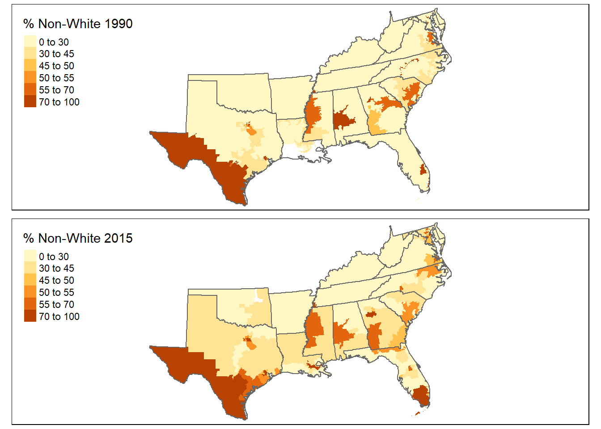
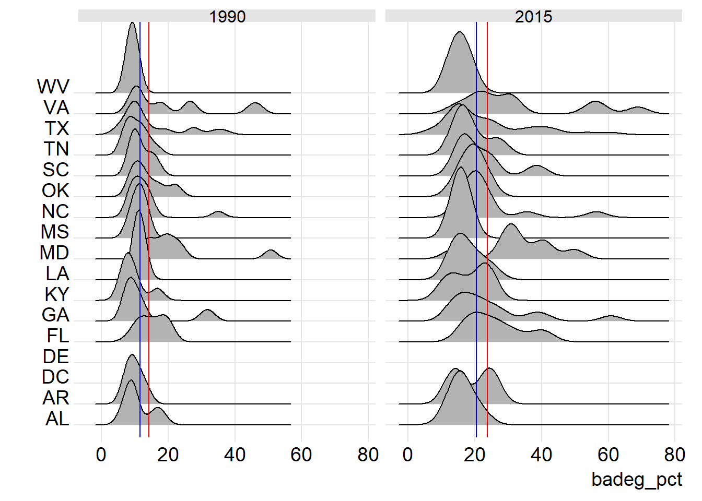

Chapter 3 South
3.1 Overview
The U.S. Census Bureau defines the “South Region” as including the following sixteen states: Alabama, Arkansas, Delaware, Florida, Georgia, Kentucky, Louisiana, Maryland, Mississippi, North Carolina, Oklahoma, South Carolina, Tennessee, Texas, Virginia, and West Virginia. This project investigates voting tendencies of U.S. citizens living within congressional voting districts of the South Region in the elections of 1992 and 2016. Voting districts are represented by one member of the U.S. House of Representatives. The number of voting districts in each state is determined through the “apportionment” process. This process divides the total 435 seats of the U.S. House of Representatives between states based on the proportion of the general population each state contains (as defined by the decennial census report). Therefore, a state’s population (and changes in population) directly influences the number of districts (and House Representatives) the state be assigned. Between the elections of 1992 and 2016 a major party shift occurred in the South Region, swinging the majority of voters from Democratic to Republican.
The South Region contained 145 congressional districts in 1992. These districts were split between states as follows: Alabama (7), Arkansas (4), Delaware (1), Florida (22), Georgia (11), Kentucky (6), Louisiana (3), Maryland (8), Mississippi (5), North Carolina (12), Oklahoma (6), South Carolina (6), Tennessee (9), Texas (30), Virginia (11), and West Virginia (3).The population of the South region increased between the 1990 and 2015 census. As of 2015, the region’s total number of congressional districts had increased by 15 to 160. States that increased in number of districts were: Florida (+4), Georgia (+3), Louisiana (+3), North Carolina (+1), South Carolina (+1), and Texas (+6). Only Mississippi and Oklahoma decreased in number of congressional districts (-1 and -2, respectively). All other states in the South Region did not change.
During the 1992 election, the mean percentage of citizens in the South Region who voted Democrat was 53.84% (IQR=23.38). This shows that voters of the South Region, in general were more likely to vote Democrat than Republican in 1992. The distributions of the percentage of population voting Democrat by State were fairly platykurtic and some even bimodal. This shows that in 1992 there was variation in how districts would vote inside of individual states (some districts leaning Democrat, some GOP). Still, 86 of the 145 districts had a mean percentage of Democratic voters greater than 50 %. There was not a stark geographic pattern to the voting habits of citizens in 1992.
The mean percentage of the South Region’s citizens who voted Democrat in the 2016 election had decreased by more than 13% to 40.43% (IQR=30.1275). This displays that, today, voters in the South Region are highly likely to vote Republican. In 2016, only 47 of the 160 voting districts had a mean percentage of Democratic voters greater than 50 %. The distributions of the districts’ Democratic percentage, by state, had shifted to the left (decreased) and become more leptokurtic (less variance around the state mean). A geographic pattern also begins to emerge, based on the 2016 election. Rural districts are far more likely to vote Republican than Democrat, while districts containing mostly Urban areas lean toward Democrats.
3.2 Descriptive analysis
3.2.1 Percent not White
 The ridgeplot above displays the distributions of the percentages of the population who identified as “non-White”, by state, in both the 1990 and 2015 census. The red line represents the regional mean for each year, while blue represents the 50 percent line.
The ridgeplot above displays the distributions of the percentages of the population who identified as “non-White”, by state, in both the 1990 and 2015 census. The red line represents the regional mean for each year, while blue represents the 50 percent line.
The 1990 ridgeplot displays that the majority of districts in the South Region had a non-White population less than that of the year’s regional mean (26.65% in 1990). It also shows that the majority of the regions population identified as “White, non-Hispanic”. The data show that in 1990, The majority of districts in each state had a majority White population, but that only 15.86 % of districts (23 of 145) had majority non-White populations.
The 2015 ridgeplot shows the increase in mean non-White population (to 38.88% in 2015), as most state histograms shifted to the right. Even more interesting is the fact that there are more districts with majority non-White populations. This number increased to 38 of 160 (23.75%) districts.
In both census years, Whites are the majority race in the South Region. The data show that the non-White population in the South Region increased by more than 10 percent (26.65% in 1990 to 38.88% in 2015) between 1990 and 2015. All states show positive skew, showing that all states contain certain districts with a much higher percentage of non-White populations.

The above maps show the spatial distribution of non-White population percentage in the South Region. Some geographic patterns stand out in these maps. The influence of change in both African-American and Hispanic populations are visible in these maps. Areas of high non-White population are visible in Southern Texas, and areas of South Florida. Areas of high non-White population are also visible across districts of the “Cotton belt”. From 1990 to 2015, non-White population percentages increased in most of the South districts, but a major increase can be seen in South Florida. The districts on the Western side of South Florida increased from having low non-White populations (<30%) to high (>70%). The only areas of the South Region where we don’t see much change is in Arkansas, Western Tennessee, Kentucky, and the mountainous regions of Appalachia.
3.2.2 Median household income
The ridge plot shows that the mean of the median household income variable, indicated by the red line on each plot, did not change much between 1990 and 2015 in the South region, consistently staying just below $50,000. While the mean for median household income increased across the region in 2015, the distributions of household income between districts in each state stayed primarily less than $50,000, with more states appearing to have more of a bell curve shape in the ridge plots.
In 1990, the voting districts of West Virginia, Tennessee, South Carolina, Oklahoma, North Carolina, Mississippi, Louisiana, Arkansas, and Alabama have a smaller distribution of median household income that are primarily below the mean of $44,897.65. This indicates that there is less variation in median household income between districts, so wealth may not be a primary factor in the creation of district boundaries. For the rest of the region, there is a larger discrepancy between the median household incomes that illustrates a noticeable difference in the wealth of voting districts. The most extreme examples are Virginia and Maryland, where the median household incomes range from below $50,000 to almost $100,000 across districts.
In 2015, there were not any drastic changes amongst the voting districts, only a minor increase in the mean of state median houshold incomes at $47,727.17. Overall, the median household income was higher for most states with the exception of Mississippi, Kentucky, Florida, Arkansas and Alabama. Once again, Virginia and Maryland remained outliers with larger discrepancies in median household income across voting districts. Virginia has a larger distribution of median household incomes than in 1990, but Maryland experienced a slight decrease in the range of median household income between districts.

Natural break intervals were used for the maps to illustrate the small differences between 1990 and 2015 for median household income. The natural breaks show the slight variation in the overall pattern of median household incomes, confirming the slight increase in the mean and overall distribution amongst voting districts observed in the ridgeplots. In 2015, the 11 of the 16 states in the South region had a median between $40,000 and $50,000, resulting in the mean of $47,727.17. The 2015 map shows some of these changes through the change in the natural breaks, with an increase in the intervals between $40,000 and $50,000. The 1990 and 2015 maps both indicate that median household income is higher in urban areas than in rural areas, particularly around Houston, Atlanta, and the area surrounding Washington D.C.
3.2.3 Percent with a bachelor’s degree

Every state in the South Region experienced a rise in its median percentage of people with a bachelor’s degree from 1990 to 2015. The median percentage of the South Region overall increased from 11.6% to 20.4%. On the ridgeplots for both 1990 and 2015 we can see that the mean (red line) is ahead of the median (blue line) indicating there are some positive outliers contributing to positive skewness. States in 2015 exhibit slightly more variability (IQR = 11.6) in bachelor’s degree percentage than in 1990 (IQR = 7.6). In 1990, the states of Virginia, Texas, Maryland, North Carolina, and Georgia have some strong positive outliers while the other states stay closer to the median. In 2015, there is more variation. Looking at the map, it is clear that districts near or in urban areas have higher rates of bachelor’s degrees. The metropolises of Atlanta, Dallas, Washington D.C., and others, are evident due to their high rates in 1990 and 2015 relative to surrounding districts. Bachelor’s degree percentages in the districts of 2015 are higher than in the districts of 1990.
3.3 Models
3.3.1 Percent not White, non-Hispanic
| Model results | ||
| pct | ||
| 1992 | 2016 | |
| (1) | (2) | |
| nonwht_pct | 0.223*** | 0.504*** |
| (0.044) | (0.039) | |
| Constant | 47.765*** | 24.384*** |
| (1.604) | (1.765) | |
| Observations | 145 | 160 |
| R2 | 0.151 | 0.509 |
| Adjusted R2 | 0.145 | 0.506 |
| Residual Std. Error | 13.409 (df = 143) | 11.325 (df = 158) |
| F Statistic | 25.362*** (df = 1; 143) | 163.711*** (df = 1; 158) |
| Note: | p<0.1; p<0.05; p<0.01 | |
This study found that in both election cycles, the percentage of citizens in a given district (in the South Region) who voted Democrat was related to the percentage of non_White citizens in that district. The above scatterplot shows that, in 1990 and 2015, the percent of a district’s population that is non-White is positively correlated with the percent of the population who voted Democrat in the next election. While both 1990 and 2015 show positive relationships between % non-White and % voting Democratic, the magnitude of this relationship increased during that time frame. Our 1992 univariate regression model found that for every 1% increase in district’s non-White population, the % voting Democrat was highly likely (significance p<.01) to rise by 0.219 %. Only 14.5% of the variance in the Percent Democratic variable was explained by the percentage of non-White citizens (adjusted r squared=0.145), showing that this variable was not the primary driver of a district’s voting tendencies. The election of 2016 showed a very different story. Our 2016 model shows that for every 1% increase in a district’s percentage of non-White population, the percentage of that district voting Democrat would increase by a half of a percent. This finding was highly significant (p<.01) with an R squared value of 0.5. This means that in the 2016 election, HALF of the variance in the percent voting Democrat within a district could be explained simply by the percentage of the district’s citizens who were not White.
3.3.2 Median household income
(You can use stargazer to summarise both models.)
| Model results | ||
| Pct. voting democratic | ||
| 1992 | 2016 | |
| (1) | (2) | |
| medhhinc | -0.0004*** | 0.0001 |
| (0.0001) | (0.0001) | |
| Constant | 74.022*** | 38.934*** |
| (3.906) | (4.510) | |
| Observations | 145 | 160 |
| R2 | 0.172 | 0.008 |
| Adjusted R2 | 0.166 | 0.002 |
| Residual Std. Error | 13.238 (df = 143) | 16.095 (df = 158) |
| F Statistic | 29.752*** (df = 1; 143) | 1.287 (df = 1; 158) |
| Note: | p<0.1; p<0.05; p<0.01 | |
 The univariate model and scatterplots both suggest that the percentage of citizens who voted Democrat within each district in the South is not closely related to the median household income in that district. The scatterplots show that in 1990, the median household income is negatively correlated with the percent of the population who voted Democrat, while in 2015 there is a slight positive correlation. Although the scatterplots indicate a change in direction, the magnitude of this relationship between percent voting democrat and median household income decreased between 1990 and 2015. The R squared for the univariate model is stronger for 1990 than 2015 but both of these relationships are fairly weak. In 1990, the median household income only explained 16% of the variance in the model, while in 2015, it explained only 0.2% of the variance. The scatterplots confirm the weak correlation, or lack thereof, as the line of best fit hardly passes through the majority of the data points for median household income.
The univariate model and scatterplots both suggest that the percentage of citizens who voted Democrat within each district in the South is not closely related to the median household income in that district. The scatterplots show that in 1990, the median household income is negatively correlated with the percent of the population who voted Democrat, while in 2015 there is a slight positive correlation. Although the scatterplots indicate a change in direction, the magnitude of this relationship between percent voting democrat and median household income decreased between 1990 and 2015. The R squared for the univariate model is stronger for 1990 than 2015 but both of these relationships are fairly weak. In 1990, the median household income only explained 16% of the variance in the model, while in 2015, it explained only 0.2% of the variance. The scatterplots confirm the weak correlation, or lack thereof, as the line of best fit hardly passes through the majority of the data points for median household income.
3.3.3 Percent with a bachelor’s degree
| Model results | ||
| Pct. voting democratic | ||
| 1992 | 2016 | |
| (1) | (2) | |
| badeg_pct | -0.621*** | 0.224** |
| (0.141) | (0.111) | |
| Constant | 62.428*** | 38.516*** |
| (2.303) | (2.923) | |
| Observations | 145 | 160 |
| R2 | 0.120 | 0.025 |
| Adjusted R2 | 0.114 | 0.019 |
| Residual Std. Error | 13.650 (df = 143) | 15.956 (df = 158) |
| F Statistic | 19.476*** (df = 1; 143) | 4.081** (df = 1; 158) |
| Note: | p<0.1; p<0.05; p<0.01 | |
 Both the 1992 and 2016 model were found to be significant. In 1992, there is a strong negative relationship between bachelor degree percentage and percent democratic adjusted. The r-squared of the 1992 model tells us that 11.3% of the variation found within the data is explained by the model. In 2016, there is a weak positive relationship between bachelor degree percentage and percent democratic adjusted. The r-squared of the 2016 model tells us that 2.5% of the variation found within the data is explained by the model. In 1992, bachelor degree percentage served as a better indicator of voting habits then in 2016, however, the r-squared was still very low and therefore explains very little variance. From 1992 to 2016, having a bachelor’s degree becomes more likely to predict that you are voting democratic. From 1992 to 2016, the univariate model shows that percent bachelor’s degree changes from being negatively associated with voting democratic to positively associated. The percent of bachelor’s degrees increased in all districts from 1992 to 2016.
Both the 1992 and 2016 model were found to be significant. In 1992, there is a strong negative relationship between bachelor degree percentage and percent democratic adjusted. The r-squared of the 1992 model tells us that 11.3% of the variation found within the data is explained by the model. In 2016, there is a weak positive relationship between bachelor degree percentage and percent democratic adjusted. The r-squared of the 2016 model tells us that 2.5% of the variation found within the data is explained by the model. In 1992, bachelor degree percentage served as a better indicator of voting habits then in 2016, however, the r-squared was still very low and therefore explains very little variance. From 1992 to 2016, having a bachelor’s degree becomes more likely to predict that you are voting democratic. From 1992 to 2016, the univariate model shows that percent bachelor’s degree changes from being negatively associated with voting democratic to positively associated. The percent of bachelor’s degrees increased in all districts from 1992 to 2016.
3.3.4 Multivariate models
## nonwht_pct medhhinc badeg_pct
## 1.085552 4.387013 4.219876## nonwht_pct medhhinc badeg_pct
## 1.003520 3.847536 3.846453##
## studentized Breusch-Pagan test
##
## data: model_se_1990
## BP = 4.1239, df = 3, p-value = 0.2484##
## studentized Breusch-Pagan test
##
## data: model_se_2015
## BP = 12.303, df = 3, p-value = 0.006414| Model results | ||
| pct | ||
| 1992 | 2016 | |
| (1) | (2) | |
| nonwht_pct | 0.172*** | 0.501*** |
| (0.043) | (0.039) | |
| medhhinc | -0.0004** | -0.0001 |
| (0.0002) | (0.0001) | |
| badeg_pct | 0.002 | 0.331** |
| (0.268) | (0.151) | |
| Constant | 65.684*** | 21.964*** |
| (5.123) | (3.794) | |
| Observations | 145 | 160 |
| R2 | 0.256 | 0.534 |
| Adjusted R2 | 0.241 | 0.525 |
| Residual Std. Error | 12.636 (df = 141) | 11.101 (df = 156) |
| F Statistic | 16.201*** (df = 3; 141) | 59.608*** (df = 3; 156) |
| Note: | p<0.1; p<0.05; p<0.01 | |
##
## Shapiro-Wilk normality test
##
## data: districts_1990$residuals
## W = 0.98793, p-value = 0.2409##
## Shapiro-Wilk normality test
##
## data: districts_2015$residuals
## W = 0.99512, p-value = 0.8768The 1992 multivariate model fails to explain much of the variance in voting tendencies within South Region districts. The adjusted r-squared value for the regression is 0.24, meaning only 24% of the variance in “% Democrat vote” could be explained by the districts % non-White population, median household income, and % with a bachelor’s degree. The model found that while a district’s racial composition and median income explained some variance in the percentage of the district who voted democrat, these variables were not the primary drivers of political leanings of the South Region. The coefficients for both “% non-White”(0.172, p<.01) and median household income (-0.0004, p<.05) were found to be significant, but the finding for the percentage of the population with a bachelor’s degree or higher (0.002, p>0.1) was insignificant. This tells us that a district’s education level had no real effect on it’s voting tendencies in the 1992 election (p>0.05).
The 2016 multivariate model was able to explain more than half of the variance in voting tendencies within South Region districts (adj. r-squared of 0.53). The percent non-White variable is responsible for the vast majority of the model’s power to explain variance. In 2016, the model showed that for every percent increase in a district’s non-White population, the district’s expected percentage of Democratic voters increases by a half a percent (0.501, p<.01). A household’s median income was found to no longer be a significant indicator of political leaning (-0.0001, p>0.1).In the 2016 election, having a bachelor’s degree is significantly tied to voting democratic (0.331, p<0.05).
Both multivariate models were tested for multicollinearity, normality of residuals, and heteroskedasticity. All variables had a VIF score less than 5, telling us that our chosen independent variables did not co-vary with one another. The residuals of both models were normally distributed, as seen in the plot, histograms, and Shapiro-Wilk test results (both p>.05). The normal distribution of these model residuals shows that model error was randomly distributed among the data, and therefore not a problem to the models. There was also no noticeable spatial pattern in the distribution of these residuals. The 2015 model did display heteroskedasticity. With all tests considered, the model results are dependable.
3.4 Summary
Southern districts with higher percentages of non-White citizens tend to have lower median household incomes, and lower percentages of citizens possessing a bachelor’s degree or higher. These facts were true in both the 1992 and 2016 election cycles. We found that the percentage of a district’s population who would vote Democrat (in the South Region) was influenced the most by the percentage of that population who were not White. This fact held true in both election cycles.
Party leanings of districts in the South Region were less racially charged in 1992 than in 2016. In 1992, the percentage of citizens possessing a college education also influence the percentage that vote Democrat. This changed in the 2016 election, as this variable no longer was able to explain much variance in the dependent variable (% Democrat). Median household income of districts in the South Region did not serve as a good indicator of a district’s political leaning in either election.
The most important finding of this study is that the political leanings of districts in the South Region seem to have become far more racially charged from the 1992 election to that of 2016. While the independent variable “percent non-White” explained only 14.5% of the variance in “percent voting Democrat” in 1992, this number increased to 50%. In the same time frame, the expected increase in the percentage of Democratic voters (per 1% increase in non-White population) in a district went from 0.172% to .501%. This displays a massive increase in the influence Southern districts’ racial compositions have on political leaning.